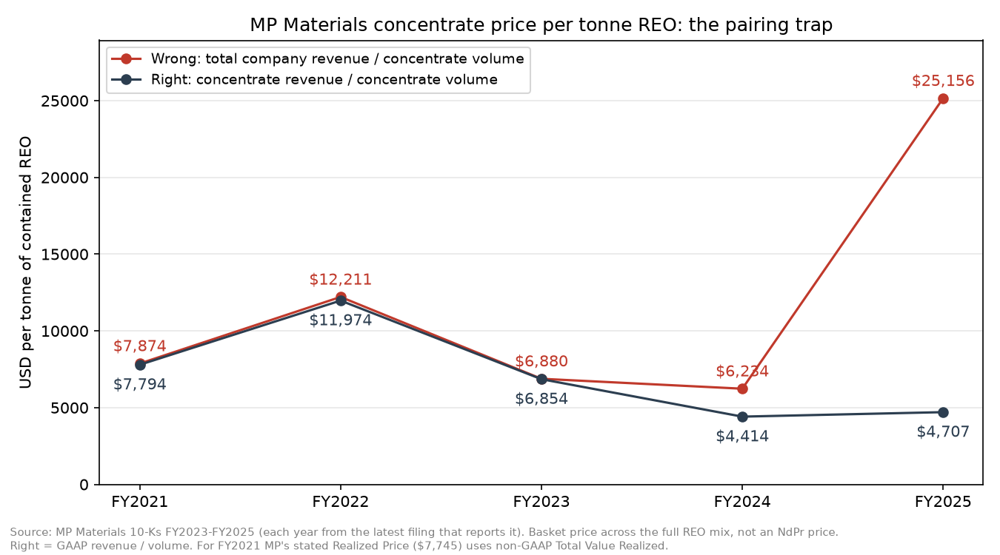

A line from the U.S. Geological Survey's 2025 rare earths report, as a computer reads it:
What it actually says, once the small footnote numbers are separated from the figures:
Numbers in reports are easy to read and easy to misuse.
This project reads rare earth companies' annual reports and government statistics, keeps every number with its page and what it means, and checks it automatically.
So far: 877 numbers from 26 documents (MP Materials, Lynas Rare Earths, Neo Performance Materials and the U.S. Geological Survey), with 2,041 checks passed and 0 failed.
Ask a question
Ask about the numbers in plain words. A language model only decides what to look up; the page finds the figures in the table and shows each one with its document and page. If the data doesn't have it, the answer says so.
Where the numbers mislead
Each of these is a real case from the documents. None of them is obvious from the numbers alone; all of them are obvious to someone who reads the right page.
The wrong revenue divided by the right volume
MP Materials reports a price for its rare earth concentrate. Divide total company revenue by concentrate volume instead, and for five years the answer looks fine. Then MP starts refining and selling magnet materials, and the same calculation overstates the price by 41% in 2024 and 435% in 2025.

Tonnes of different things added together
Neo Performance Materials reports one sales volume for the whole company. It adds rare earth chemicals, magnet materials and hafnium together, so revenue per tonne for the whole company describes none of them:
| Part of Neo, 2025 | Revenue (US$) | Tonnes sold | Revenue per tonne |
|---|
Revenue per tonne is calculated in code from the printed figures. Every Neo volume is stored with low confidence and a note that it is a product mix.
A footnote glued to a number
In the line at the top of this page, footnote numbers printed in small type run straight into the figures in the PDF's text. Read naively, China's production becomes 11,105,000 tonnes and Australia's reserves 135.7 million. The pipeline removes characters printed smaller than the text before reading, so a footnote can never change a number.
An estimate that later doubles
USGS marks most production figures as estimates and revises them in the next edition. Australia's 2024 production is 13,000 tonnes in the 2025 edition and 29,000 in the 2026 edition. The checks treat a revised estimate as expected, and a revised reported figure as a question.
More: the full list of traps found, from tonnes that aren't physical tonnes to a unit label that is wrong in the source.
A company checked against the government
The U.S. Geological Survey publishes US rare earth mine production every year, and MP Materials is the main US producer. The two never share a spreadsheet. MP's own figure falls within the USGS figure's rounding every year:
| Year | MP's 10-K (tonnes) | USGS (tonnes) | Result |
|---|
Tonnes of rare earth oxide in concentrate, each from its latest report. USGS rounds its figures, so 45,000 means anything from 44,500 to 45,500.
How it works
- Find the table. Each table is found by phrases printed on its page, never by page number, because page numbers change every year. If a phrase matches two pages, the run stops instead of guessing.
- Read the line. The exact printed text of every number is kept, with its page. Year columns are read from the table's own header, whether it shows three years, five, or a quarter next to the full year.
- Attach the meaning. A small map per source says what each line is: which company, part, material, unit and scale. When the source itself is wrong, the map records the true meaning with a note, and the printed number is never changed.
- Check everything. Revenue divided by volume must agree with every stated price; segments must add up; every number printed in more than one place must agree; and the company must agree with the government.
- Explain or flag. A check that fails with a reason printed in a document is marked expected, with the page. One that fails without a reason stays open.
No language model does arithmetic here: numbers go into the table and division happens in code. The Python was written with AI assistance; the domain rules, the choice of traps and the design are mine.
What is still unexplained
15 check lines fail with no reason found yet. They are listed here rather than hidden or loosened:
Another 46 lines fail for a documented reason: MP's price before 2022 is a non-GAAP measure, its concentrate estimate was revised in 2021, and USGS estimates are revised in later editions.
Browse the numbers
Every number, with the document and page it came from and its exact printed text. Search by company, country, year, material or note.
Loading the numbers…
| Who | Year | What | Material | Value | Unit | Document | Page | As printed | Notes |
|---|